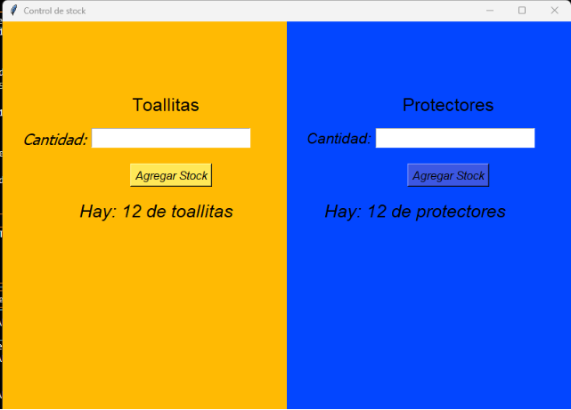
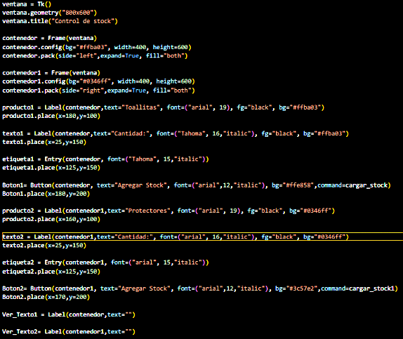
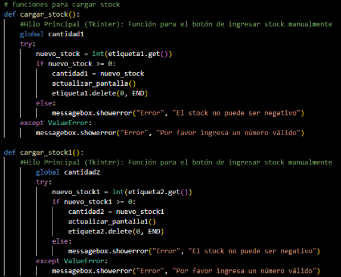
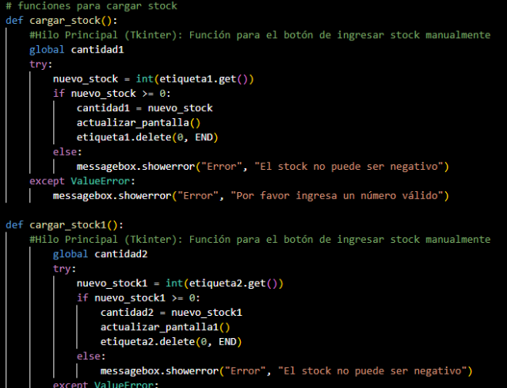
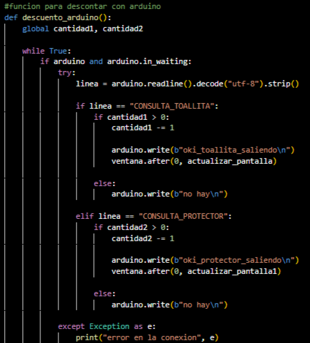
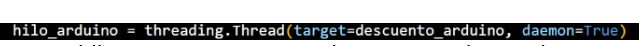

¿QUÉ ES PYTHON?

Python es un lenguaje de programación utilizado para desarrollar
diferentes tipos de programas y aplicaciones. Se caracteriza por
tener una sintaxis sencilla y fácil de entender, por lo que es muy
utilizado tanto por personas que están comenzando a programar como
por programadores con experiencia.
Python permite crear programas, automatizar tareas, trabajar con
datos, desarrollar aplicaciones y controlar diferentes sistemas.
Además, cuenta con muchas herramientas y bibliotecas que permiten
ampliar sus posibilidades.
En nuestro proyecto, Python forma parte de las herramientas que
utilizamos para aplicar conocimientos de programación y
automatización, trabajando junto con Arduino para lograr el
funcionamiento del sistema.
PROYECTO DEL DISPENSER (PARTE DE PYTHON)
Lo que se hizo fue un app para el controlar el stock de un dispensador de toallitas con python y arduino
el Frontend se ve asi:

y el backend para que se viera asi es el sig:

para que se vea este texto:
en el back se hizo lo siguiente:

eso es para cargar la cantidad de toallitas y de protectores
y para actualizar esa cantidad en el back se hizo lo Sig.: sirve para actualizar la cantidad de toallitas y protectores

ahora la comunicación con arduino en el backend:

esto lo que hace es que lee algo en arduino y si tiene tal cosa descuenta y sino no descuenta y para que funcione parelamente con python sin que uno este ejecutandose uno primero y despues el otro se usa un hilo: un hilo se usa mas que nada para que dos acciones funcionen de manera simultanea sin que uno se priorize uno sobre otro